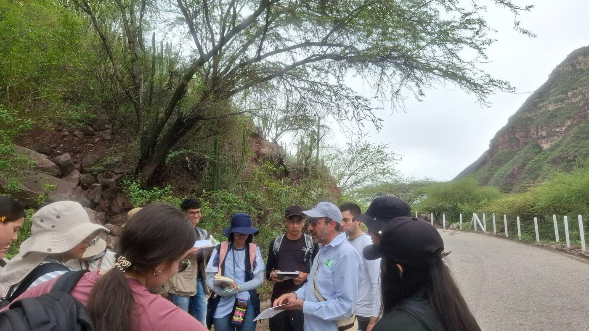

¿Quiénes somos?
El SEGET es el Semillero de Geología Estructural y Tectónica de la Escuela de Geología de la UIS, adscrito al Grupo de Investigación en Geología Básica y Aplicada (GIGBA).
Somos estudiantes de Geología interesados en comprender cómo se forma y evoluciona la Tierra. Nos enfocamos en estructuras como fallas, pliegues y fracturas, porque a través de ellas podemos interpretar los procesos tectónicos que han ocurrido en una región y entender cómo se ha formado y transformado el paisaje que conocemos.
Nos motiva entender cómo esas estructuras influyen directamente en las comunidades: algunas están relacionadas con los sismos o con los movimientos en masa. Por eso queremos estudiarlas y también acercar ese conocimiento a la gente, para que comprenda mejor el territorio que habita y reconozca la importancia de la prevención y la gestión del riesgo.



¿Qué investigamos?
- Línea 1
Geología Ambiental y Amenazas Geológicas
- Línea 2
Geología del Cuaternario
- Línea 3
Geología Experimental
Temas de trabajo
- Fallas y cinemática
- Pliegues y vergencia
- Fracturas y criterios de Riedel
- Tectónica de Colombia
- Sismotectónica y mecanismos focales
- Análisis de esfuerzos
- Interpretación sísmica
- Movimientos en masa
- Geoeducación
¿Por qué lo hacemos?
Cuando investigamos nuestro territorio entendemos procesos que muchas veces pasan desapercibidos y los convertimos en información útil para estudiantes, comunidades y otros actores. Lograr que una persona conozca mejor su territorio y reconozca la importancia de la prevención ya es una forma de generar impacto.
Lo que hemos aprendido
“Investigar no es solamente buscar información o analizar datos, sino también hacerse preguntas, discutir diferentes ideas y aprender de los demás.”
“La divulgación científica puede ser un proceso recíproco: no solo enseñamos, también escuchamos y aprendemos de las comunidades.”

¿Estás pensando en unirte?
Anímate, incluso si sientes que todavía no sabes lo suficiente. Un semillero es precisamente un espacio para aprender, equivocarse, preguntar y descubrir qué temas te apasionan.